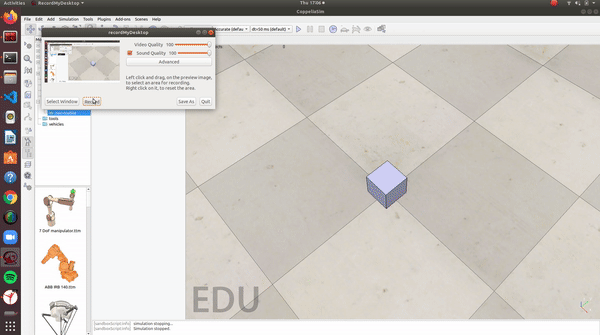
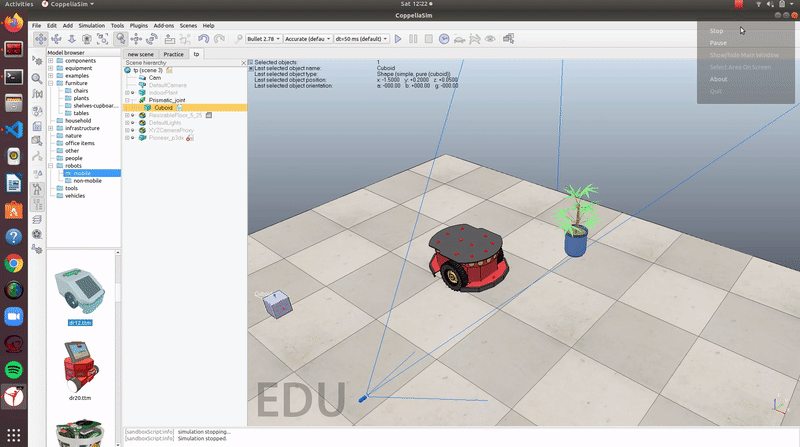

We will be covering the basic functions of Python API and their use in simulation</br>
1) Navigate to CoppeliaRobotics\CoppeliaSimEdu\programming\remoteApiBindings\python\python and copy all the .py files into the working directory</br>
2) Navigate to CoppeliaRobotics\CoppeliaSimEdu\programming\remoteApiBindings\lib\lib</br>
Depending on the System you are on, you can select the folder (Windows, Ubuntu 16/18, MacOS)</br>
copy the .dll, .so, or the .dylib file respectively to your working directory.
3) The next thing we want to do is that we have to create a threaded script in any component of the scene where you want to implement API.

4) In the Script we should add the following statement in the sysCall_threadmain() function
simRemoteApi.start(19990)
Note: 19999 is the port that will be used for API communications, this can be defined by you.
Now you are all set for using the PythonAPI in CoppeliaSim.
sim library in the code</br>
2) Add the below statements to the codesim.simxFinish(-1)
clientID = sim.simxStart('127.0.0.1',19990,True,True,5000,5)
Note: The port being used in the statement should match the port number specified while setting up.
sim.simxFinish(-1)
clientID=sim.simxStart(‘127.0.0.1’,19990,True,True,5000,5)
if clientID != -1: print(“Connected to the remote API server”) else: print(“Connection not successful”) sys.exit(“Could not connect”)
**Note: You have to run the Simulation before you run the Code or else the Connection would not be established**
<p align="center">
<img src="./Assets/PythonAPI_StartAPI.gif" height ="512"/>
</p>
## Retrieving Object Handles in python
* Object handles can be considered as a key or an ID which a component possesses. It is used to provide commands to a component(For eg. joint Velocity to a motor). PythonAPI also has an inbuilt function for that:
```python
sim.simxGetObjectHandle()
| Parameters : | clientID: the client ID </br> objectName: name of the object. </br>operationMode: a remote API function operation mode. Recommended operation mode for this function is sim.simx_opmode_blocking |
| Return Values | returnCode: a remote API function return code </br> handle: the Object handle |
An Example of using this Function is :
error_code,motor_handle = sim.simxGetObjectHandle(clientID,"Object Name in CoppeliaSim", sim.simx_opmode_oneshot_wait)
sim.simxSetJointTargetVelocity()
| Parameters : | clientID: the client ID </br> jointHandle: handle of the joint </br>targetVelocity: target velocity of the joint (linear or angular velocity depending on the joint-type)</br>operationMode: a remote API function operation mode. Recommended operation mode for this function is sim.simx_opmode_oneshot or sim.simx_opmode_streaming |
| Return Values | returnCode: a remote API function return code |
An Example of using this Function is :
error_Code = sim.simxSetJointTargetVelocity(clientID,motor_handle,10,sim.simx_opmode_streaming)
sim.simxGetVisionSensorImage()
| Parameters : | clientID: the client ID </br> sensorHandle: handle of the vision sensor </br>options: image options, bit-coded:bit0 set: each image pixel is a byte (greyscale image), otherwise each image pixel is a rgb byte-triplet</br>operationMode: a remote API function operation mode. Recommended operation mode for this function is sim.simx_opmode_streaming |
| Return Values | returnCode: a remote API function return code </br> resolution: the resolution of the image (x,y)</br>image: the image data |
The image array returned by the function is a 1D Array. So for the image to be displayable we first resize the image and convert it to RGB formate using NumPy
An Example of using this Function is :
errorCode,resolution,image= sim.simxGetVisionSensorImage(clientID,cam_handle,0,vrep.simx_opmode_streaming)
img = np.array(image,dtype = np.uint8)
img.resize = (resolution[0],resolution[1],3)
sim.simxStopSimulation()
| Parameters : | clientID: the client ID </br> operationMode: a remote API function operation mode. Recommended operation mode for this function is sim.simx_opmode_oneshot |
| Return Values | returnCode: a remote API function return code
</table>
An Example of using this Function is :
```python
sim.simxStopSimulation(clientID, sim.simx_opmode_oneshot_wait)
```
## Putting all of it together
* After learning all of the above functions. We will write a simple code for an environment containing a Vision sensor, a Pioneer_p3dx (under Mobile Robots), and a plant.
The below code establishes a connection with the simulation and commands the joint motors. It also retrieves the image from the vision sensor and displays after resizing it.
```python
import sim
import sys
import numpy as np
import cv2
sim.simxFinish(-1)
clientID = sim.simxStart('127.0.0.1',19990,True,True,5000,5)
if clientID!= -1:
print("Connected to Remote API Server")
else:
print("Connection failed")
sys.exit('Could not reconnect')
errorcode,left_motor_handle = sim.simxGetObjectHandle(clientID,'Pioneer_p3dx_leftMotor',sim.simx_opmode_oneshot_wait)
errorcode,right_motor_handle = sim.simxGetObjectHandle(clientID,'Pioneer_p3dx_rightMotor',sim.simx_opmode_oneshot_wait)
print("Given Target Velocities to the Joints")
errorcode,cam_handle = sim.simxGetObjectHandle(clientID,'Cam',sim.simx_opmode_oneshot_wait)
try:
while True:
sim.simxSetJointTargetVelocity(clientID,left_motor_handle,1,sim.simx_opmode_streaming)
sim.simxSetJointTargetVelocity(clientID,right_motor_handle,1,sim.simx_opmode_streaming)
errorCode,resolution,image=sim.simxGetVisionSensorImage(clientID,cam_handle,0,sim.simx_opmode_streaming)
if len(image)>0:
image = np.array(image,dtype=np.dtype('uint8'))
image = np.reshape(image,(resolution[1],resolution[0],3))
cv2.imshow("Image", image)
cv2.waitKey(10)
except KeyboardInterrupt: #Checks if ctrl+c is pressed
sim.simxStopSimulation(clientID, sim.simx_opmode_oneshot_wait)
print("Stopping Simulation")
pass
sim.simxFinish(clientID)
```
## Output :
 ## Finding the rest of the Functions * You can find the rest of the equivalent functions from the [PythonAPI Functions list](https://www.coppeliarobotics.com/helpFiles/en/remoteApiFunctionsPython.htm). You just have to search the Lua function's name and you will find the Python equivalent function and its description. ## References Used * [A video tutorial via a small project by Nikolai](https://youtu.be/SQont-mTnfM)</br> * [The official API documentation and Functions List provided by CoppeliaSim](https://www.coppeliarobotics.com/helpFiles/en/remoteApiFunctionsPython.htm)</br> |